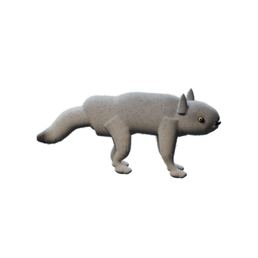
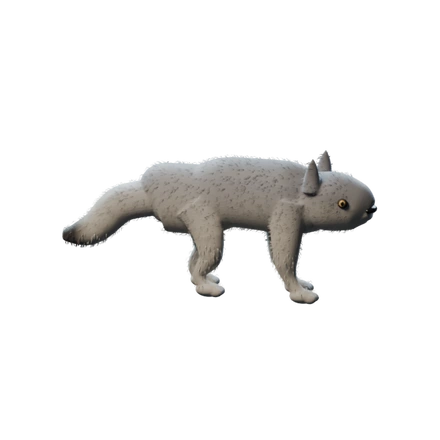
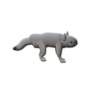
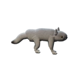
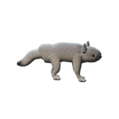

CELESTIAL FRONTIER · SEPTEMBER 8, 2026
One Wolf. Two finish studies.
These Blender studies keep the same generated Wolf, body mesh, proportions and camera. They explore surface treatment and finite neck/head articulation.
Space and creature direction is accepted; these Wolf studies remain below target. The face, limb junctions and coat still fall short of the requested painterly richness and collectible personality. The broad coat is visibly noisy. These are technical studies, not accepted finished assets. Canonical anatomy and runtime acceptance remain open.
The earlier Wolf/explorer/ship vista, four-biome and eight-space-object proposals led to Nick’s request for more samples. He has now approved the exact direction of the 16-object space sheet and 12-creature sheet; see the approval record. Biome and UI references are still forthcoming. The supplied Dakk workflow generates and processes paintings; it does not automatically turn them into rigs. This earlier Blender study remains separate. See the pipeline review, source assessment and browser proposal.

Fine coat · softer, finer surface detail.
Broad coat · stronger clumps; visible stippling needs refinement.Articulated movement
A 2.75-second study: brace, neck/head strike, recoil and return to rest. Press Play. This is a slowed authoring study, not the current game’s combat timing. It contains no opening bite, walking stride, opponent, attack VFX or audio.
33 rendered frames at 12 fps. Saved model evaluated at all 65 authored frames; four paws remain planted and the final pose matches the start.
Actual 132 px portraits

Previous
Fine coat
Broad coatCompare all three at 440 px each
The intended next level
The frontier-oil-01 brief describes visible oil brushwork, believable mass, weathered materials and dramatic warm/cool light. Nick’s exact approved space and creature sheets now establish their visual direction. Biome and UI references are forthcoming; individual assets and animation still need review. The earlier Pokémon comparison describes attachment, recognition and readable turn-based rhythm, not copied designs or cute anatomy.
The scalable route is a curated procedural family system. Excellent designed anatomy and compatible rigs supply the rules; existing genomes drive coherent variation. The final browser representation still needs a complete encounter and phone-performance proof.